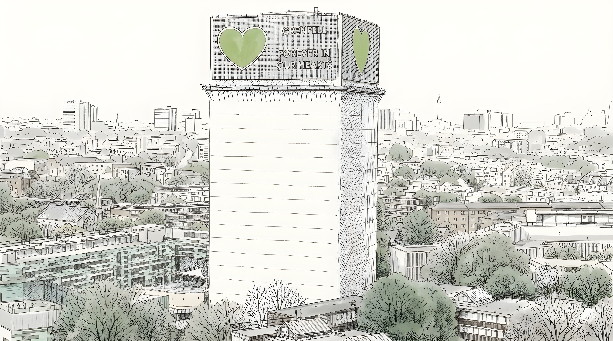

Summary
Teaching Disasters supports teachers to teach about Grenfell in ways that are informed by research, attentive to community knowledge and ethically sensitive. It builds on the original Grenfell Curriculum research through teacher professional development, classroom implementation and continuing evaluation.
The project brings together the Grenfell community, teachers and researchers. Its online course, Teaching about Grenfell: Education and Social Justice after Disasters, is organised around the periods before, during and after the fire. Further work examines how teachers use the resources and how teaching can support learning about memory, justice and responsibility.
Aims
- Work with disaster-affected communities, organisations, teachers, and young people to promote a culture of safety, justice, and resilience.
- Support teachers to teach about human-made disasters such as Grenfell in an evidence-based and ethically sensitive manner.
- Facilitate intergenerational dialogue about a national tragedy with respect.
Objectives
- Develop and maintain a research-informed online CPD course on disaster education using the Grenfell Tower fire as an example, with principles that can be applied to other disasters.
- Generate evidence of the impact of the CPD course on UK teachers.
- Propose an innovative model of collaboration between researchers and disaster communities for social and cultural change.
- Share the experience with other disaster communities within and outside the UK to facilitate mutual learning and solidarity.
Teacher CPD and resources
The free online course supports educators across phases and subjects, with subject knowledge, curriculum links, reflection and classroom activities. A temporary version with limited interactivity is available while the course moves to a new platform; the CPD gateway provides the current access route.
Access the teacher CPD Browse teaching resources
The interactive EDJ framework connects the human story, systemic failures and learners’ capacity to act for justice.
Recent developments
- March 2026: a Year 5 classroom pilot at Thomas Jones Primary School supported the development of teaching about Grenfell.
- 25 March 2026: the parliamentary event From Loss to Learning explored national tragedies and the curriculum. Read the report.
- 2026: the free online CPD became available, alongside classroom resources and guidance.
- 28 July 2026: a seminar with the Ministry of Housing, Communities and Local Government shared the project’s approach to education, memory and justice.
Ongoing evaluation examines teachers’ use of the course and resources and their implications for educational practice.
Outputs
- The Grenfell Curriculum: Honouring the legacy of Grenfell through teacher professional development (2026)
- From loss to learning: National tragedies and the national curriculum (2026)
Underpinning research
The professional development builds on community-engaged research in the original Grenfell Curriculum project.
- Beyond remembrance: A community-engaged framework for education for disaster justice after the Grenfell Tower fire (2026)
- Teaching about Grenfell: Recommendations from the community (2025)
Team
- Wonyong Park, University of Southampton (Principal Investigator)
- John Schulz, University of Southampton (Co-Investigator)
- Nigel Fancourt, University of Oxford (Co-Investigator)
- Hanan Wahabi, Grenfell Tower Memorial Commission (Co-Investigator)
- Harry Russell, University of Southampton (Research Assistant)
